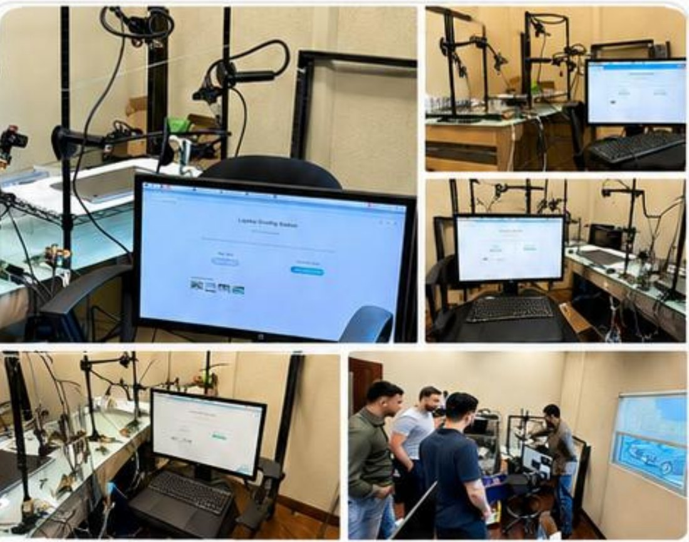
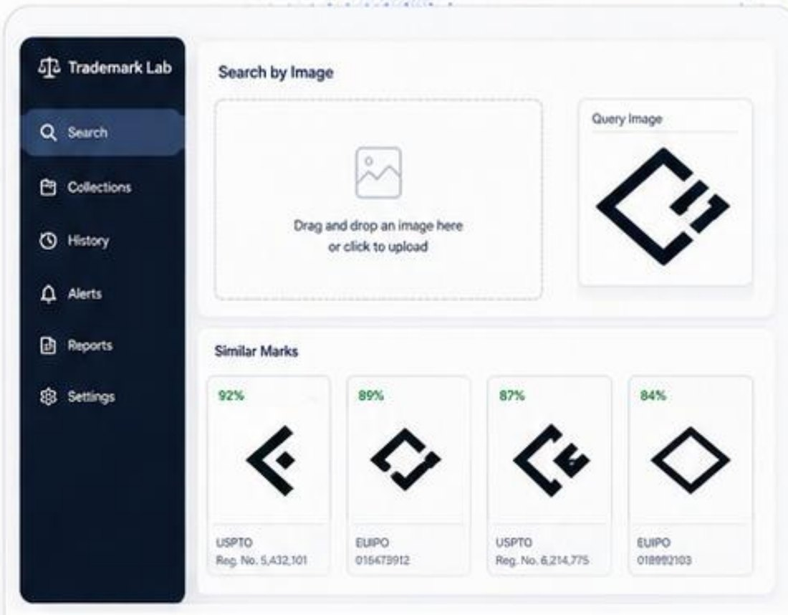
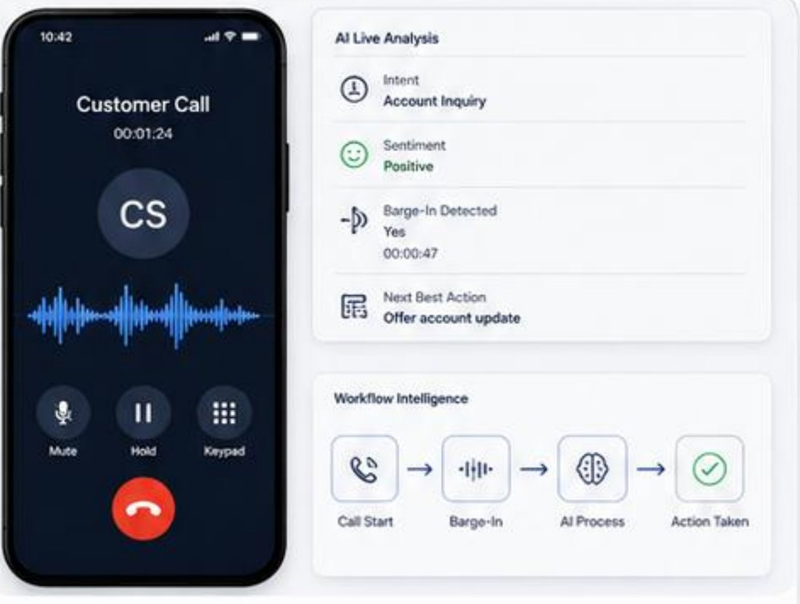
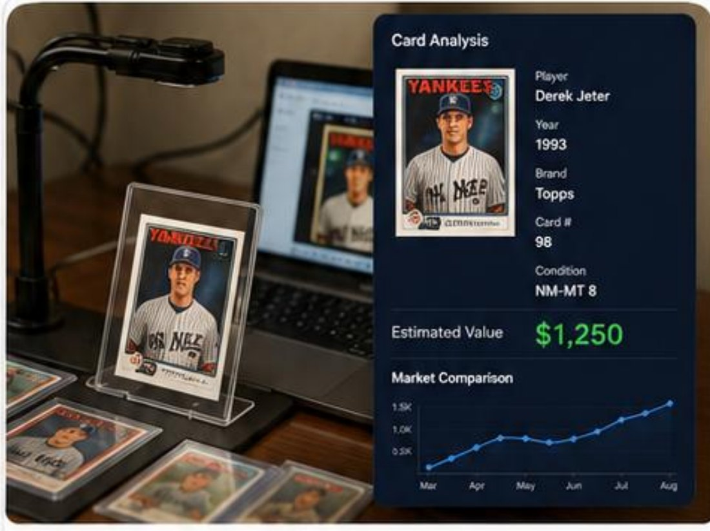
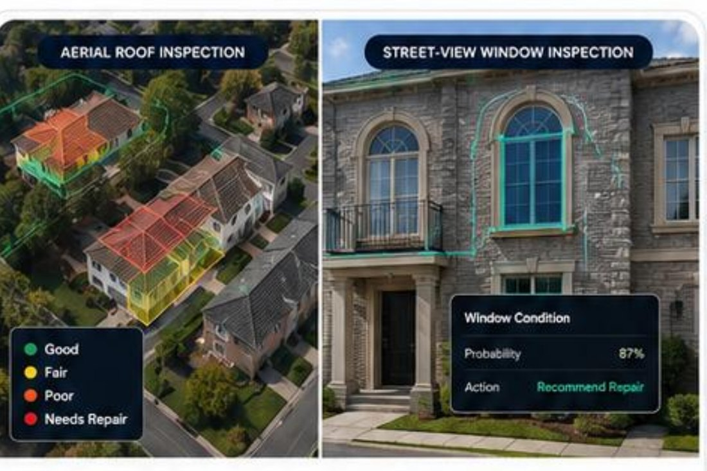
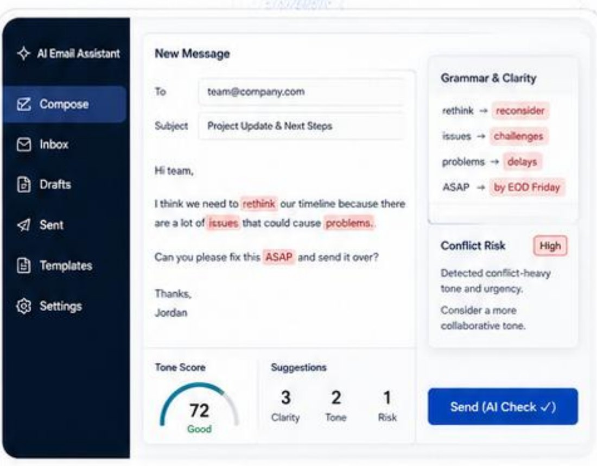
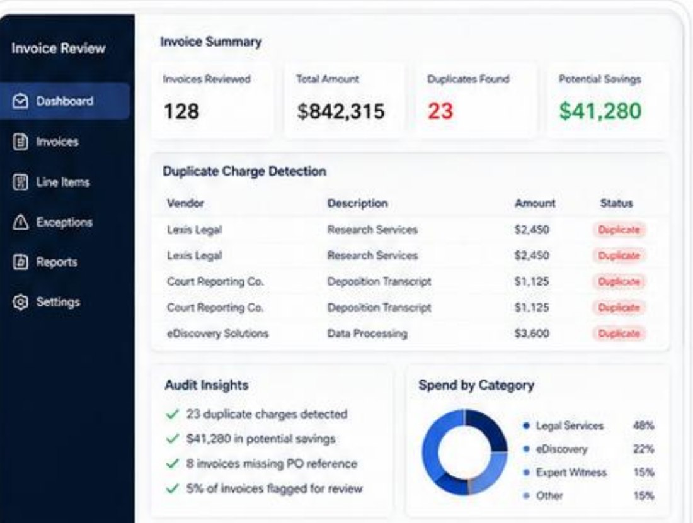
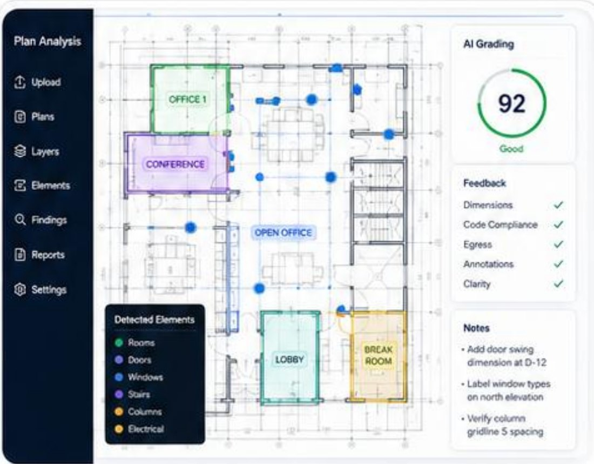

You have data trapped in images, calls, emails, maps, documents, and operations. These are the systems we've built to process it, grade it, monitor it, and act on it — in production, not in a demo.
Infrastructure teams needed to know how far road construction had actually progressed across remote sites. Manual review of satellite imagery took too long, critical signals were easy to miss, and scaling site-by-site inspection with people was prohibitively expensive.
What We Built
A geospatial AI system that compares satellite imagery of the same corridor over time and measures road progression automatically. The pipeline detects completed, in-progress, and planned segments, then rolls them up into a progress score teams can track month over month — for example, a corridor moving from bare earthworks in January to 78% complete by June.
The Outcome
Faster monitoring of infrastructure development, higher consistency than manual photo review, and actionable operational insight: project managers see exactly which segments moved and which stalled, without sending anyone to the site.
78%Progress measured automatically from imagery
+32%Progress gain surfaced over a 5-month window
3Segment states tracked: completed, in progress, planned
Selected Projects
Computer Vision, Documents, Voice, and Maps
Every project below started as a messy, manual, operations-heavy workflow — and shipped as a working AI system.

Computer Vision · Hardware + AI
Used Laptop Grading Station
Computer VisionAutomationHardware + AI
The Challenge
A used-electronics operation needed to cosmetically grade laptops at high volume. Human graders were slow, and grades varied from person to person — inconsistent grading meant disputes, returns, and expensive errors.
What We Built
A multi-camera capture station that photographs every laptop from fixed angles, feeding an AI-assisted cosmetic inspection pipeline. Scratches, dents, and screen wear are detected and scored the same way every time, and the station is designed for high-throughput processing on a real warehouse floor.
The Outcome
Consistent, repeatable grades at a throughput no manual team could match — grading became a fast station on the line instead of a bottleneck.

Vision Transformers · Legal Tech
Trademark Lab
Vision TransformerVector SearchLegal Tech
The Challenge
Trademark conflicts are visual, but traditional trademark search is text-based. Finding marks that look similar to a proposed logo meant hours of manual browsing across registries.
What We Built
An AI-powered trademark similarity search. Users drag and drop a logo; the system computes image embeddings with a vision transformer and runs vector search across USPTO and EUIPO datasets, returning visually similar marks ranked by similarity score with their registration details.
The Outcome
Visual conflict checks that used to take hours of paging through registries now take seconds — with similarity scores that make the risk conversation concrete.

Voice AI · Workflow Intelligence
Asterix Telephony Intelligence
Voice AIBarge-InWorkflow Intelligence
The Challenge
Phone workflows are where structured software meets unstructured reality. Calls needed live understanding — intent, sentiment, and the right moment for a system or agent to step in — plus handling of images captured mid-call.
What We Built
A telephone AI workflow with live call analysis: intent detection, sentiment tracking, and smart barge-in handling so the system knows when to interject and what the next best action is. Images captured during the telephony workflow are processed by AI in the same pipeline, so the whole interaction — from call start to action taken — is one intelligent flow.
The Outcome
Smarter call interactions with less manual triage: the system surfaces the next best action in real time instead of leaving it to post-call review.

Image Recognition · Pricing
Baseball Card Valuation AI
Image RecognitionPricing IntelligenceCollectors
The Challenge
Valuing a baseball card requires identifying the player, year, brand, card number, and condition — expertise that doesn't scale when you're processing collections instead of single cards.
What We Built
A computer vision pipeline that identifies cards from a photo, extracts key attributes (player, year, brand, card number, condition), and estimates market value against comparable-sale data — turning a card on a desk into a structured record with an estimated price and a market trend line.
The Outcome
Collection-scale valuation: what took an expert minutes per card became an automated pass with attributes and price estimates attached to every card.

Geospatial AI · Property Tech
Roof & Window Condition Intelligence
Geospatial AICondition DetectionProperty Tech
The Challenge
Property teams needed to know which structures required repair — but sending inspectors to every address is slow and expensive, and desktop reviews of imagery were inconsistent.
What We Built
Computer vision analysis of roofs from satellite and map imagery combined with window inspection from street-view imagery. Each structure is scored — good, fair, poor, needs repair — with a confidence probability and a recommended action, so field visits go only where the model says they're worth it.
The Outcome
Inspection triage from a desk: teams prioritize the properties that actually need attention instead of driving routes to find out.

NLP · Productivity
Corporate Email Intelligence
NLPRisk DetectionProductivity
The Challenge
Internal email is where deals stall and conflicts start. Grammar issues erode credibility, and conflict-heavy wording — urgency, blame, "ASAP" pressure — escalates situations before anyone notices.
What We Built
An AI assistant that reviews email before it's sent: it corrects grammar and clarity, flags conflict-heavy tone and urgency, scores the overall tone, and suggests more collaborative phrasing — all inline, in the compose window, before the send button.
The Outcome
Better corporate communication by default: risky emails get caught and softened before they land, and every message ships with a clarity check built in.

Document AI · Finance Ops
Legal Bill Audit
Document AIAudit AutomationFinance Ops
The Challenge
Legal invoices arrive as dense line-item documents, and duplicate or erroneous charges hide in plain sight. Manual review couldn't keep up with the volume, so overbilling quietly slipped through.
What We Built
A document intelligence system that ingests legal invoices, extracts line items, detects duplicate charges across vendors and dates, and flags invoices missing PO references. In one review cycle it processed 128 invoices totaling $842,315 and surfaced 23 duplicate charges worth $41,280 in potential savings.
The Outcome
Cleaner billing and recovered spend: roughly 5% of invoices flagged for review, with duplicate detection and audit insights running continuously instead of once a year.

Document Vision · AEC
Architecture Plan Intelligence
Document VisionAuto MappingAEC
The Challenge
Architectural plans hold enormous structured information — rooms, doors, windows, columns, notes — but reviewing them for completeness and code compliance was slow, manual, and dependent on scarce expert time.
What We Built
An AI workflow that grades architectural plans automatically. It maps key layout elements (rooms, doors, windows, stairs, electrical), checks dimensions, code compliance, egress, and annotations, and produces a plan grade with specific feedback — like flagging a missing door swing dimension or a mislabeled window type.
The Outcome
Plan review that scales: every submission gets a consistent, detailed grade in minutes, and expert reviewers focus on the exceptions the model flags.
Have a Workflow Like These?
Bring us a workflow that is visual, repetitive, document-heavy, or hard to scale — we turn it into a practical AI system.